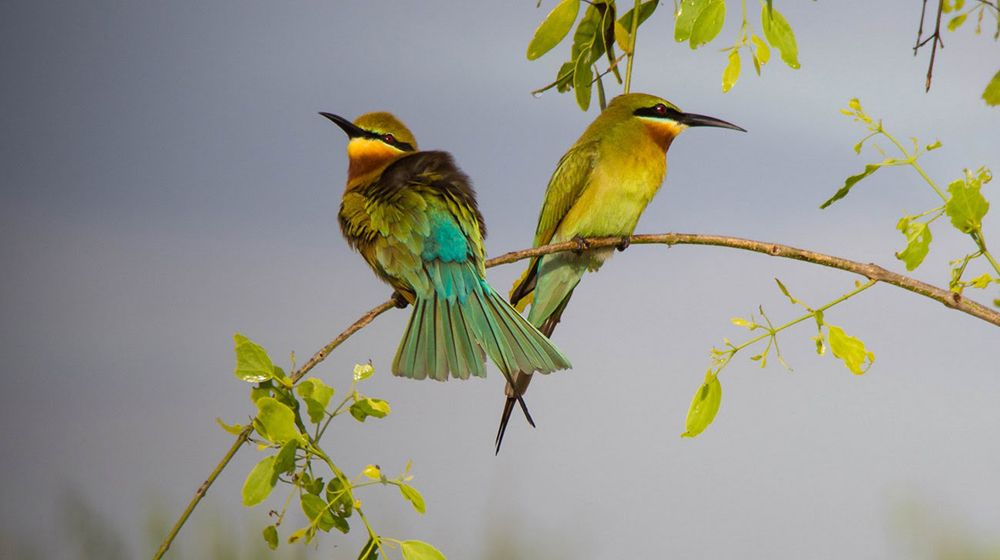
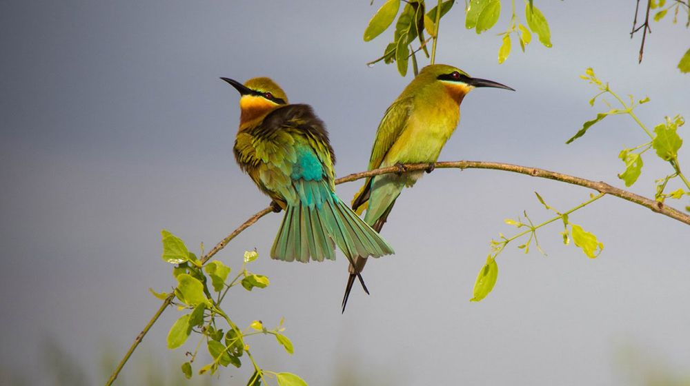

- Wildlife Conservation in Sri Lanka,A History of Wildlife and Nature Protection Society of Sri Lanka, 1894-1994 By C. G. Uragoda · 1994
- Wild Sri Lanka (2nd Edition) By Gehan de Silva Wijeyeratne · 2019
- Birds of Sri Lanka By Deepal Warakagoda, Uditha Hettige, Himesha Warakagoda · 2022
- Mammals of Sri Lanka By Gehan de Silva Wijeyeratne · 2020
- Sri Lankan Wildlife By Gehan de Silva Wijeyeratne · 2022